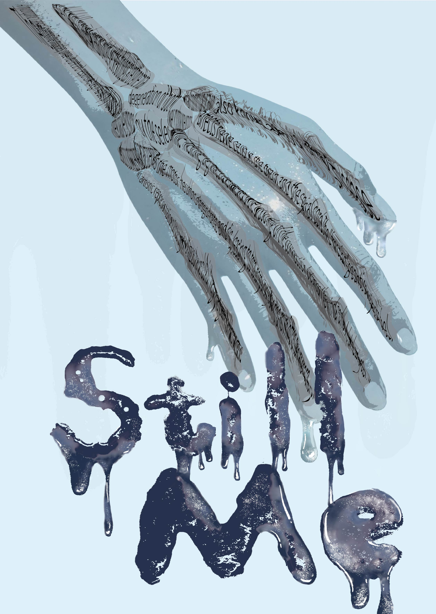
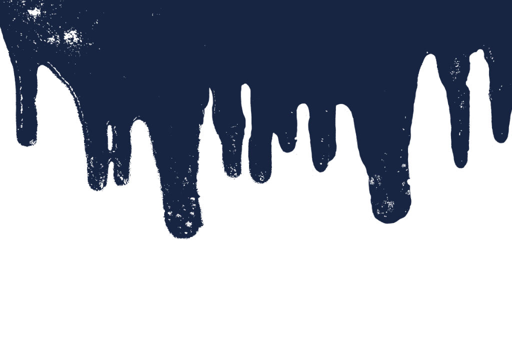
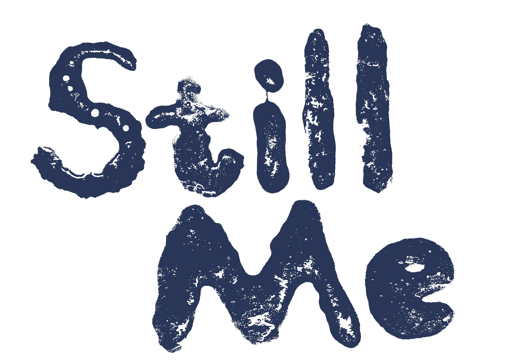
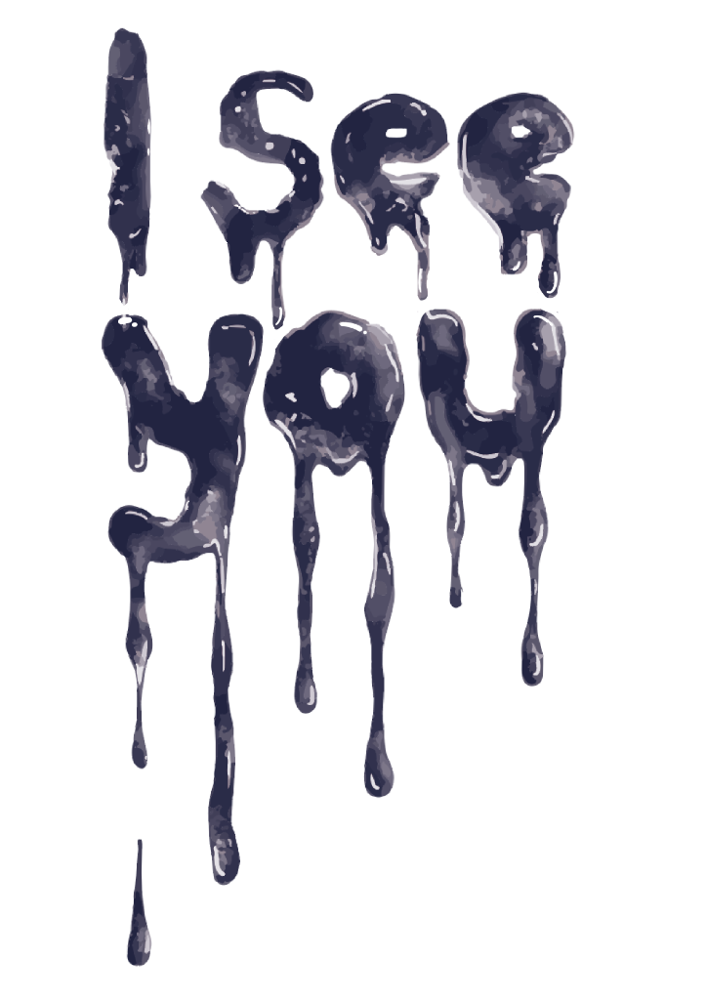
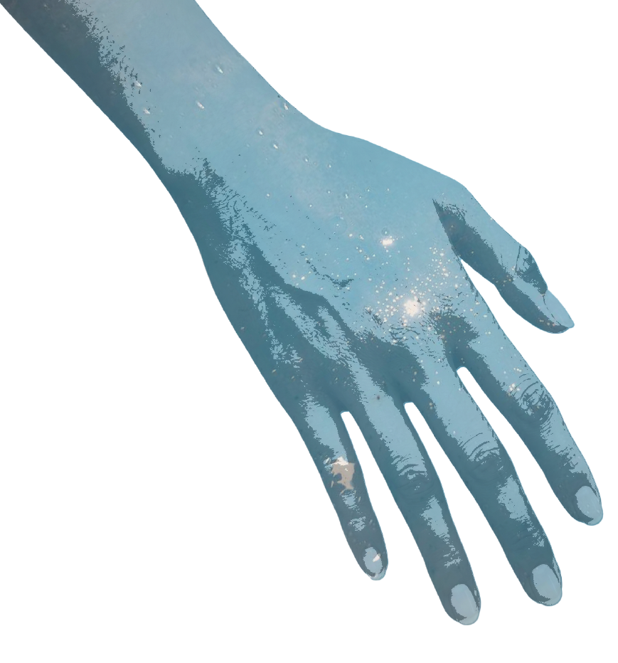
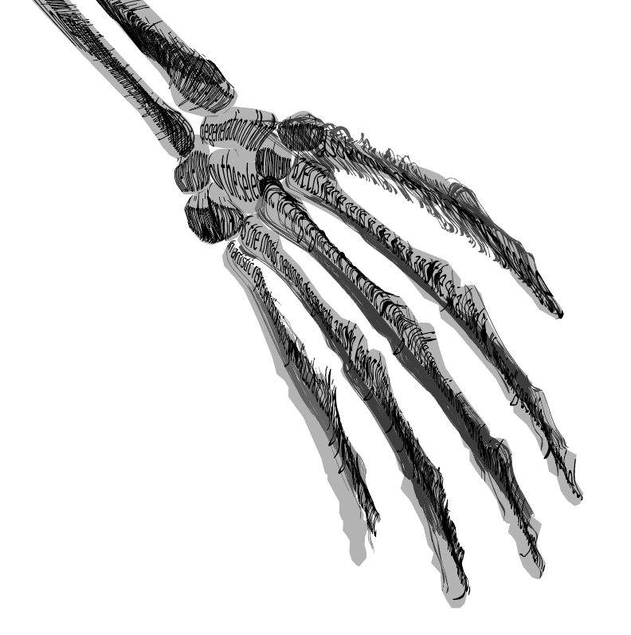

ALS SOCIAL ISSUES POSTERS



創作源於陪伴罹病家人的切身經歷。當我看著家人的四肢與脊椎漸漸無力、身體失控後仰，那種終將失去的恐懼，促使我以液體消逝的意象作為視覺起點。作品紀錄了直面病痛時、陪伴者最深沉的無力感，並試圖將這份說不出的心疼，轉化為視覺上的一記擁抱。
Rooted in my experience of caring for an ill family member. Witnessing the fading strength in their limbs and spine inspired me to use the imagery of fluid loss to manifest the fear of ultimate departure. The piece captures a caregiver’s profound helplessness, translating unspoken pain into a visual embrace.




